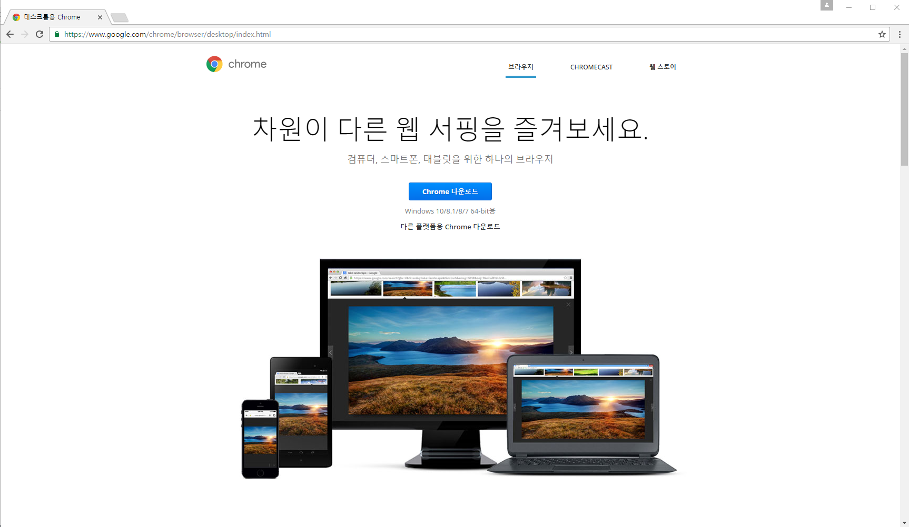
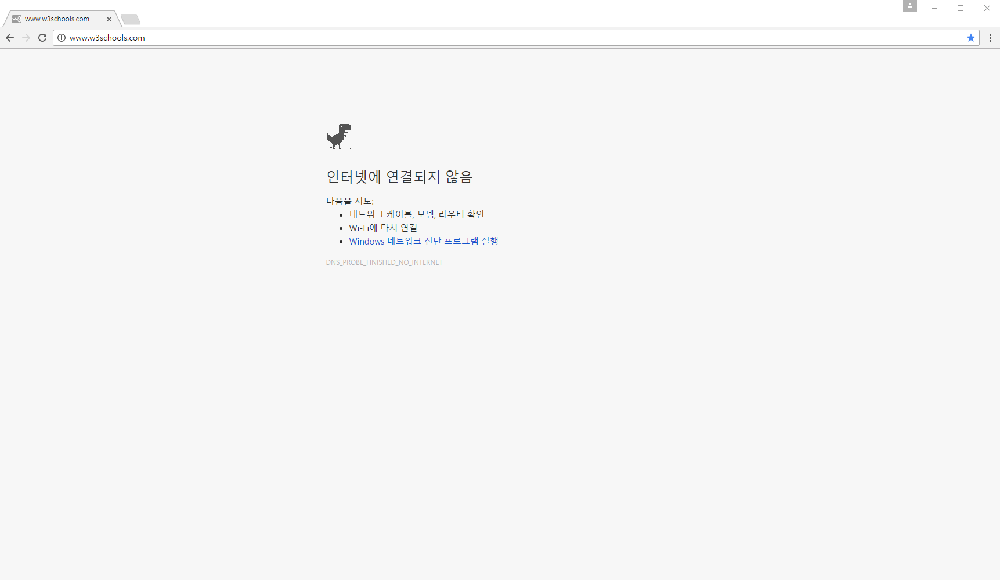
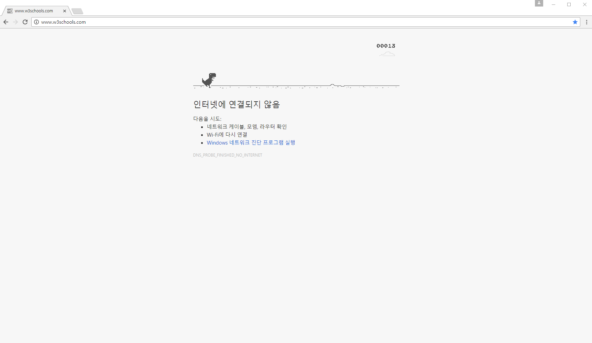
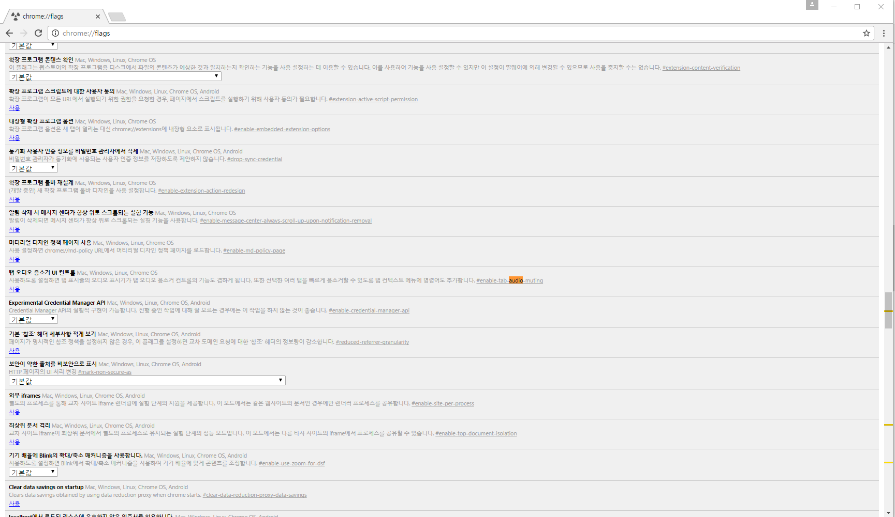
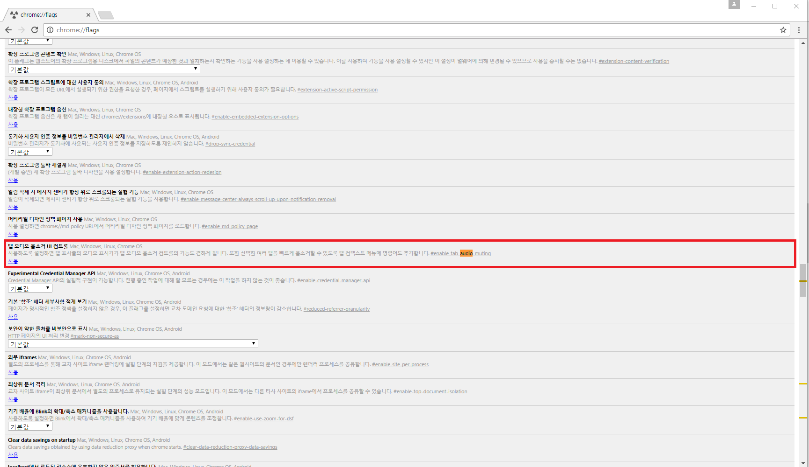
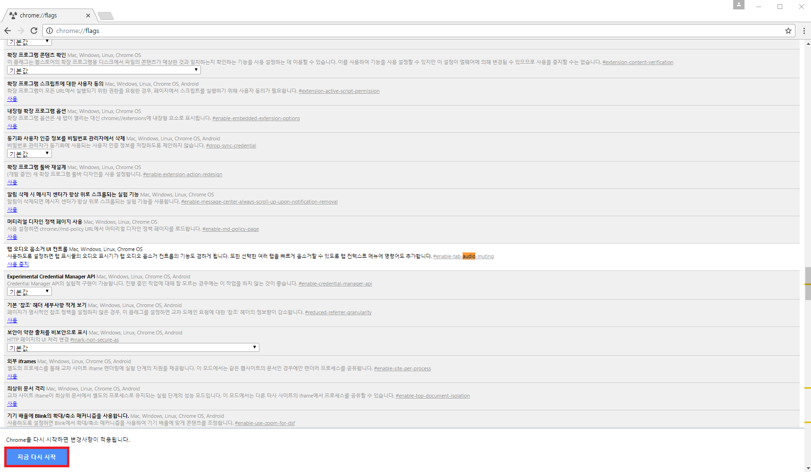
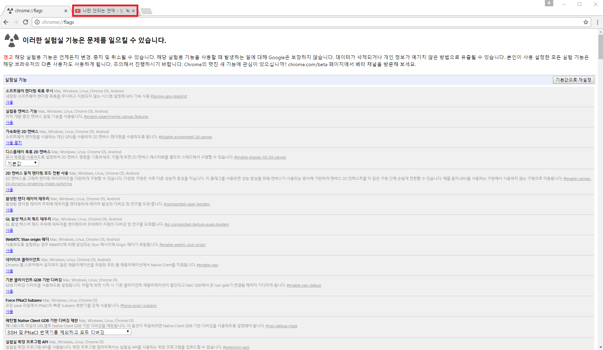

Chrome
1. 소개1)
 1) 개요
1) 개요Chrome을 설명하기 전 먼저 Chromium Project에 대해 간략히 설명한다. 크로뮴, 크로미엄 또는 크로미움이라고 부른다. 구글에서 개발하는 오픈 소스 크롬 프로젝트이다. 엄밀히 말하자면 구글 크롬 자체는 오픈 소스가 아니고 Chromium이라는 오픈 소스 버전이 따로 있는데, 상표등록이 되어있는 '구글' 이라는 이름과 오픈 소스는 공개할 수 없는 자잘한 것들 때문에 나눠놓은 것이다.
왜냐하면 크롬에 내장된 플래시 플레이어와 PDF 뷰어, H.264 동영상 재생 코덱, 구글 서비스 지원, 동기화 등의 자잘한 기능엔 브라우징 정보 수집 기능도 들 어있기 때문이다.
2) 목표
이 Chromium Project에서는 간단하고 효율적이 사용자 인터페이스를 제공하며 현존하는 다른 웹 브라우저들에 비해 나은 안정성과 속도, 그리고 보안성을 갖는 것을 목표하고 있다. 실제로 Chromium 웹 브라우저를 사용해보면, 다른 브라우저들에 비해 훨씬 빠른 것을 느낄 수 있다. (심지어 크롬보다도)
↓다운로드 링크
https://chromium.woolyss.com/download/ko/
3) Chromium Web Browser와 Chrome의 차이점2)
구글 크롬에는 있지만 크로미엄에는 없는 것은 다음과 같다.
- 내장 Adobe Flash Player
- 내장 PDF Viewer
- 구글 이름과 로고
- 내장 인쇄 미리보기와 인쇄 시스템
- 자동 업데이트
- 사용 정보 및 오류 보고서를 구글로 보내기 선택하기
- 사용 정보 추적 (구글 웹사이트에서 구글 크롬을 다운로드하지 않을 경우에 이 코드가 포함되어 언제 어디서 구글 크롬을 다운로드했는지 등의 정보를 전송)
2. 개요3)
1) 출시 발표
구글 크롬의 발표는 2008년 9월 2일에 하였으며 출시는 2008년 9월 3일에 예정되어 있었다. 구글 크롬의 특징을 설명하고 새로운 브라우저에 대한 관심을
유발시키기 위해 만화가 스콧 맥클라우드가 그린 만화가 저널리스트들과 블로거들에게 보내졌다.
2) 발달
구글 크롬은 구글과 모질라 넷스케이프 포타블 런타임(Mozilla's Netscape Portable Runtime), 네트워크 보안 서비스(Network Security Service), NPAPI
이 밖에도 SQLite, 많은 오픈 소스를 통해 25개의 코드 라이브러리를 모아 만들어졌다.
3. 설치
Chrome 설치는 매우 간단하다.
다음의 링크를 통해 들어가면, 밑의 그림과 같이 나온다.

PC에서 Chrome을 사용할 것이면 파란색 버튼에 있는 'Chrome 다운로드' 버튼을 클릭하여 설치하면 되고,
다른 기기일 경우 밑에 있는 '다른 플랫폼용 Chrome 다운로드' 버튼을 클릭하여 자신이 사용하고 있는 기기를 선택하여 설치하면 된다.
4. 특징4)
4.1. 기능
Chrome에는 다음의 기능들이 있다.
- 주소 자동 완성 기능과 검색 기능 갖춘 검색주소창 (Omnibox)
- V8 자바스크립트 가상 머신 탑재
- 주소창과 도구 모음이 없는 창을 통해 웹 애플리케이션 직접 구동 가능
- 피싱 사이트나 유해 소프트웨어 차단 정보를 구글 세이프 브라우징 API를 통해 자동으로 갱신
- 웹키트 레이아웃 엔진 사용
- 보안(keyFunction)과 신뢰성 향상을 위해 개별 탭에 대한 프로세스를 분리
- 기어와의 통합
- 독립적인 탭, 자체적인 작업 관리자 기능
- 탭을 합치거나 별도의 창으로 분리할 수 있다.
- 기타 향상된 보안 기능들 (향상된 팝업창 차단 등)
- 다양한 확장기능 설치
- 테마 적용
- 구글 문서 도구와 연동되는 북마크 및 확장기능 동기화
- 구글 번역을 이용한 웹페이지 자동 번역
- IE를 탭으로 사용하도록 가능한 기능 익스플로러 사용 IE 탭 멀티 (Enhance)
- GPU 가속을 지원한다. 다만, 설정을 따로 해야한다. (카나리아는 변수를 지정해야하고 나머지 버전은 '실험실 기능'에서 골라쓰면 된다)
4.2. Chrome About 주소명령체계
Chrome은 애플리케이션을 활용하기 위해 웹사이트나 파일 대신 프로그램내 특수한 주소명령체계를 이용하고 있다. 다음은 그 목록이다.
- about:about - about 페이지들의 목록.
- about:blank - 빈 페이지.
- about:cache - 구글 Chrome으로 캐시된 모든 웹 페이지 목록.
- about:conflicts - 메인 프로세스에 로드된 모듈과 마지막 시점에서 등록된 모듈.
- about:crash - 현재의 페이지를 충돌 시킨다.
- about:credits - 만든이들, 사요된 라이선스, 그리고 크롬을 만들 때 쓰인 모든 소프트웨어들의 링크.
- about:dns - DNS 프리패칭(prefetching) 엔진 검사.
- about:gpu - GPU 가속 디버깅을 위해 보조 사용되는 그래픽 카드 정보.
- about:histograms - 내부적으로 실행한 명령의 자세한 히스토그램을 볼 수 있다.
- about:memory - 사용된 메모리.
- about:net-internals - 네트워크 검사
- about:flags - 실험적인 브라우저 기능들.
- about:plugins - 설치된 플러그인들의 목록, (확장프로그램이 아니다) 또한 점검을 위해 플러그인 사용중지 기능이 지원된다.
- about:sync - 동기화 엔진 검사.
- about:tcmalloc - 마지막 페이지 로드 상태.
- about:terms - 크롬 서비스 약관.
- about:version, about: - 크롬, 웹키트, V8, 그리고 실행에 이용된 명령줄 옵션.
- chrome://accessibility - 접근성 기능 On/Off, 접근성 트리정보 확인.
- chrome://bookmarks - 북마크 관리자.
- chrome://downloads - 다운로드 관리자.
- chrome://extensions - 확장프로그램 관리자.
- chrome://history - 방문 기록.
- chrome://print - 프린트 미리보기.
- chrome://settings - 크롬 설정.
- chrome://view-http-cache - 캐시된 HTTP 삭제.
- view-cache:url - 고급설정 캐시의 자세한 부분 중 일부를 볼 수 있다.
- view-source:url - 특정 URL의 소스코드 보이기.
4.3. Chrome의 장단점5)
4.3.1. Chrome의 장점
1) 충돌이 없다.
크롬의 가장 큰 장점 중 하나는 바로 크롬만의 멀티프로세스 아키텍처라 할 수 있다. 이는 오류가 난 개별 웹페이지나 애플리케이션이 사용 중인 모든 브라
우저를 다운시키지 않도록 보호해 주는 역할을 한다. 모든 탭, 윈도우, 그리고 플러그인들이 각각 구분된 환경에서 실행되기 떄문에, 어느 한 곳에서 문제가
발생하더라도 다른 브라우저에까지 그 여파가 미치지 않는 것이다. 더불어 각각의 사이트와 애플리 케이션을 제한된 환경에 묶어둠으로써 보안도 한 층 강화
하는 일석이조의 효과를 누릴 수 있다.
2) 정말 빠르다.
멀티프로세스 아키텍처의 또 다른 장점이라 할 수 있는데, 속도가 느린 사이트 하나가 나머지 브라우저들의 속도에 영향을 미치지 않기 때문에 상대적으로 더
빠른 인터넷 사용이 가능하다. 더불어 사이트 내 플러그인에 대해서도 비슷하게 반응한다. 예를 들어, 특정 사이트에 매우 무거운 Java 형식의 광고가 있다고 가
정하면, 크롬의 경우 이를 배제한 채 다른 사이트 구성 요소들을 우선적으로 구현하는 방법을 이용한다. 결과적으로 문제가 되는 컨텐츠를 제외한 나머지 구성
요소들을 수 초 만에 띄울 수 있다. 이는 확실히 느린 실행으로 문제가 되고 있는 몇몇 브라우저들과 비교했을 때 비교 우위를 누릴 수 있는 장점이라 할 수 있
다.
3) 인터페이스가 매우 단순하다.
크롬의 인터페이스는 절제의 미를 한껏 살린 모습이다. 거의 브라우저처럼 느껴지지도 않을 정도. 화면 대부분은 현재 우리가 방문하고 있는 사이트를 보여주
는데 할당되어 있다. 불필요한 공간을 차지하는 버튼이나 로고 조차도 없다. 실제로 크롬 디자이너들은 사용자들에게 있는 듯, 없는 듯한 존재감 없는 편안한 브
라우저를 제공하기 위해 많은 노력을 기울였다고 밝혔다. 그들의 노력이 어느 정도의 성과를 거둔 셈이다.
4) 검색이 보다 더 쉽다.
크롬의 대표적인 기능을 꼽으라면, 단연코 옴니박스(Omnibox)를 꼽을 수 있다. 이는 브라우저 상단에 위치한 다목적 바(bar)를 칭하는 것. 옴니박스에는 URL과
검색어를 동시에 쳐 넣을 수 있는데, 검색어, 또는 URL에 따라 별도의 추가 조건 없이 사용자가 가고 싶어 하는 곳으로 안내해 준다. 더불어 옴니박스는 사용자
의 취향을 파악, 이를 저장해, 이 후 다시 동일한 사이트를 찾았을 때 더 쉽고 간편하게 접근할 수 있도록 도와준다. 이는 단순한 자동 완성 기능보다 더 고차원
적인 기술이라 할 수 있다. 한 번 방문한 사이트에 대해 크롬은 자체 검색 박스를 만들어 놓고, 이를 옴니박스를 통해 바로 활용할 수 있도록 해준다. 즉, 키워드
검색까지 자동화되어 있다는 뜻이다.
5) 탭 조절이 더 간편해졌다.
크롬은 기존의 탭형 브라우저들에 비해 한 단계 발전된 모습을 보여주고 있다. 우선 탭을 끌어다가 새로운 창으로 만들 수 있다. 아니면 다른 창에다가 붙여 넣
을 수도 있다. 크롬은 더불어 탭 시작 설정을 유연성있게 최적화할 수 있다. 특정 조건을 설정해 놓을 수도 있고, 바로 직전 세션에서의 설정을 그대로 사용할 수
도 있다. 다른 브라우저들의 경우 이러한 기능을 사용하기 위해서는 별도의 플러그인을 설치해야만 한다.
6) 자주 가는 홈페이지에 더 쉽게 접근할 수 있도록 배려한다.
크롬은 다이내믹 홈페이지라는 기능을 보유하고 있는데, 이는 사용자가 자주 가는 사이트들에 대한 정보를 기억해 두었다가, 이를 적절하게 사용자에게 노출시
켜 더 쉽고 간편하게 이들에 접속할 수 있도록 해주는 기능이다. 가장 자주 가는 사이트 9위 안에 드는 사이트들은 홈페이지에 스냅 샷의 형태로 노출시켜 주고,
가장 자주 사용하는 검색 엔진과 즐겨찾기 또한 같은 형태로 노출시켜 준다. 만약 이들 스냅 샷들을 보고 싶지 않거나, 다른 사이트들을 해당 리스트에 올리고
싶다면, 언제든지 설정을 변경할 수 있다.
7)사생활 보호가 뛰어나다.
크롬은 인코그니토(Incognito)라는 이름의 보안 브라우징 옵션을 제공한다. 이 기능이 제공하는 특별한 창을 이용할 경우, 이 때 했던 모든 작업들에 대한 기록
이 남지 않는다. 더불어 인터넷 익스플로러와는 달리, 크롬의 인코그니토는 다른 브라우징 창들로부터 분리되어 있기 때문에, 일반적인 창들과는 구분하여 독립
적으로 사용할 수 있도록 되어 있다.
4.3.2. Chrome의 단점
1) 애드 온(add-on)이 없다.
파이어폭스는 풍부한 애드온 컨텐츠를 보유한 것으로 유명하다. 반면 크롬은 아직 별도의 애드온을 만들어내지 못하고 있다. 이러한 단점을 보완하기 위해 구
글은 API 구성을 고려하고 있지만, 현재로써는 크롬을 이용하기 위해서는 애드블론(AdBlock), 지메일(Gmail), 그리고 버그미낫(BugMeNots) 등과 같은 프로그램
들을 포기해야만 한다. 물론 크롬 이외의 브라우저를 대체제로 사용함으로써 이러한 크롬의 결점을 보오나하는 것도 하나의 방법이다.
2) 광고들에 더 시달릴 가능성이 높다.
구글 광고는 업계에서 가장 수익성이 좋기로 유명하다. 그러나 그만큼 사용자들의 정보는 광고주들에게 노출되는 것이라 볼 수 있다. 구글이 개발한 브라우저
를 사용하게 되면, 사용자의 개인 정보 노출은 더욱 불가피해질 가능성이 높다. 크롬을 사용한다는 말은 곧 구글의 통제 하에서 인터넷 서비스를 이용한다는 뜻
이 된다. 구글이 인수했던 인터넷 광고 기업 더블클릭(DoubleClick)이 사용자들의 인터넷 이용 경향을 여과없이 파악, 이를 광고에 적용하는 역할을 맡을 것으로
보인다.
3) 드롭다운(dropdown) 버튼이 없다.
URL 드롭다운 버튼이 크롬에는 없다. 이를 대체하기 위해 크롬은 옴니박스라는 새로운 형태의 기능을 선보였지만, 드롭다운 버튼을 애용했던 사람들인 경우에
는 매우 아쉬워할만한 부분이라고 볼 수 있다.
4) 히스토리(History) 기능이 약하다.
크롬의 히스토리 기능은 파이어폭스의 그것에 비해 성능이 상대적으로 떨어진다. 크롬은 단순히 매일매일의 히스토리를 열람할 수 있는 메뉴만 제공한다. 모든
히스토리들을 날짜 별, 사이트 별, 또는 방문횟수 별로 정리하는 기능이 없는 것이다.
5. 숨겨진 기능
5.1. 공룡게임
인터넷 연결을 해제한 후 크롬을 실행하여 스페이스바를 누르면 공룡게임이 시작된다.

인터넷 연결이 안된 상태에서 홈페이지 접속을 시도하면 위와 같이 공룡이 그려져있는 화면을 볼 수 있다.
스페이스바를 눌러보자.

스페이스바를 누르면 공룡이 한 번 점프를 하더니 게임 점수가 보이면서 장애물피하기 게임이 시작되는 것을 볼 수 있다.
5.2. 탭 음소거6)
IE 브라우저를 사용하면서 불편한 부분 중 하나는 브라우저에 따로 음소거 기능이 없다는 것이었다.
이 부분은 개인차가 분명히 발생하겠지만 개인적으로 브라우저에서 많은 사이트를 접속하고, 각각의 페이지마다 소리가 재생되는 경우가 있는데 이 때 불필요
한 소리의 재생을 멈추기 위해 PC의 '음소거' 기능을 이용해야 했다. 그러나 크롬 브라우저를 사용하면서 '실험 기능' 이라는 숨겨진 메뉴를 통해서 설정할 수 있
다.
※Firefox 에서는 별도의 활성화 설정없이 기본적으로 '탭 음소거' 기능을 지원한다.
우선 chrome://flags 를 입력해서 페이지에 접속한다.

- 'Ctrl + F' 찾기 기능 활성화 후 'audio' 검색

- 탭오디오 음소거 기능의 '사용' 버튼 클릭

- 하단에 생성되는 '지금 다시 시작' 버튼을 클릭하여 크롬 브라우저 재시작

- 탭에 음소거가 생겼음을 볼 수 있다.
- 탭에 있는 볼륨 아이콘을 클릭하면 on/off 기능을 사용할 수 있다.
※볼륨 아이콘은 해당 탭에 소리가 나는 매체가 있어야만 생긴다. 즉, 해당 탭에 소리나는 매체가 없으면 볼륨 아이콘이 안보인다.
출처
1)↑ https://namu.wiki/w/%ED%81%AC%EB%A1%9C%EB%AE%B4%20%ED%94%84%EB%A1%9C%EC%A0%9D%ED%8A%B8#s-1. 2016년 12월 07일에 확인함.
2)↑ https://ko.wikipedia.org/wiki/%ED%81%AC%EB%A1%9C%EB%AF%B8%EC%97%84_(%EC%9B%B9_%EB%B8%8C%EB%9D%BC%EC%9A%B0%EC%A0%80). 2016년 12월 07일에 확인함.
3)↑ https://ko.wikipedia.org/wiki/%EA%B5%AC%EA%B8%80_%ED%81%AC%EB%A1%AC#.EC.97.AD.EC.82.AC. 2016년 12월 07일에 확인함.
4)↑ https://ko.wikipedia.org/wiki/%EA%B5%AC%EA%B8%80_%ED%81%AC%EB%A1%AC#.EA.B8.B0.EB.8A.A5. 2016년 12월 07일에 확인함.
5)↑ http://www.itworld.co.kr/news/50907. 2016년 12월 07일에 확인함.
6)↑ http://jimmyfactory.tistory.com/50. 2016년 12월 07일에 확인함.